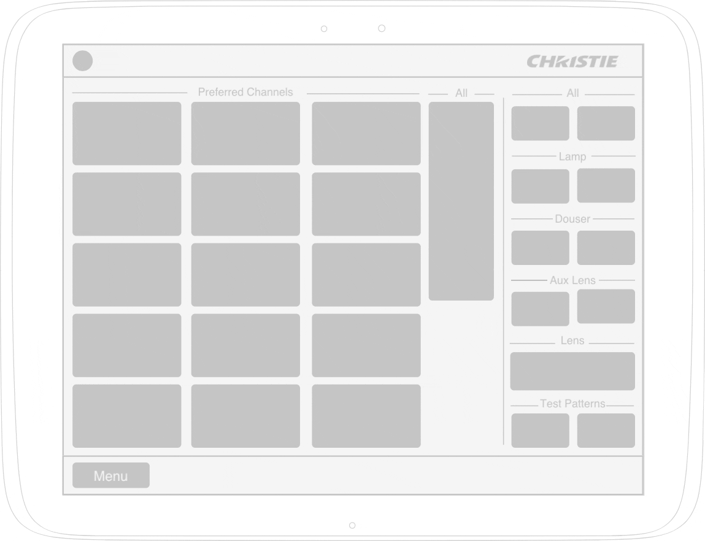
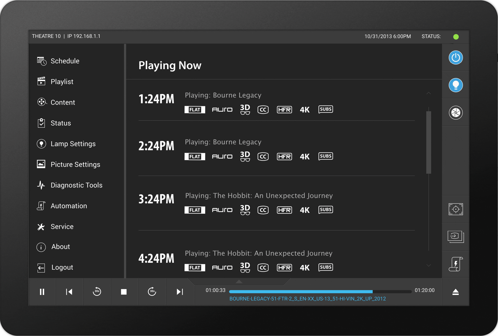
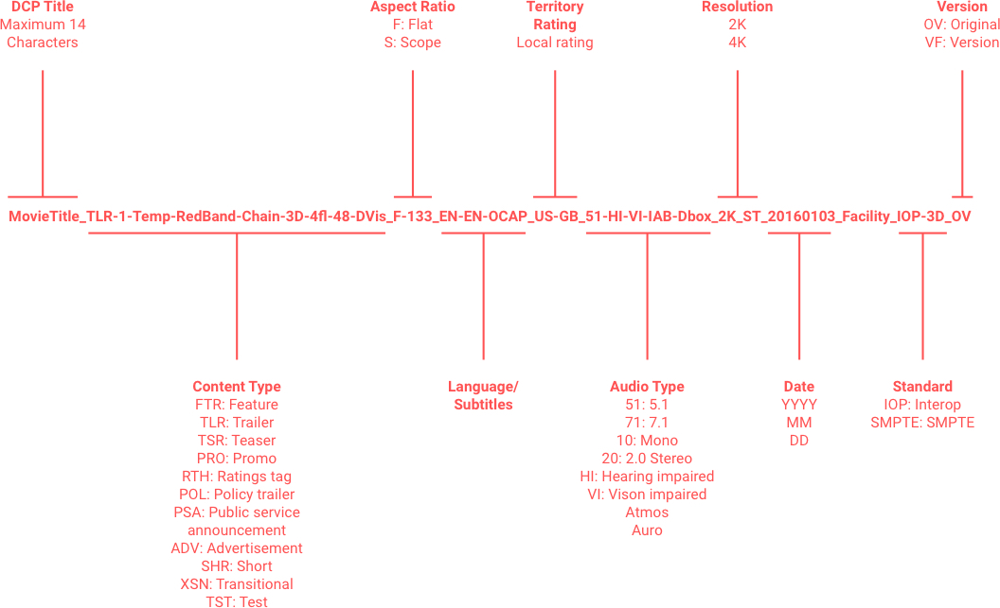
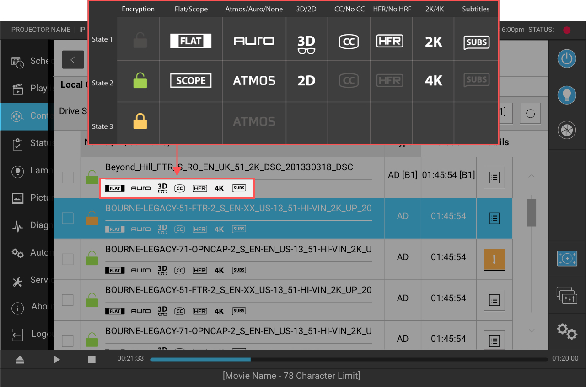
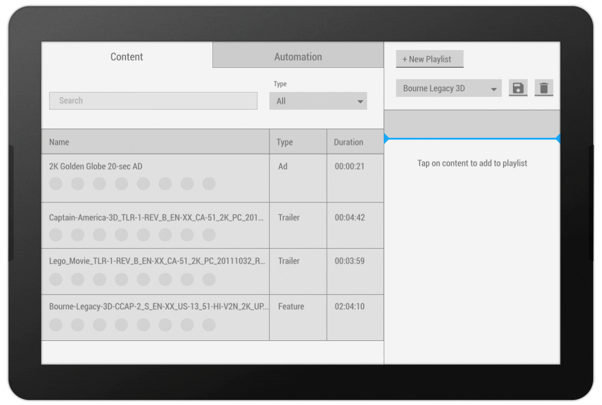

I joined Christie Digital Systems as the lead UX designer for the Fusion project – a resistive touch screen interface for a new lineup of laser cinema projectors. Through several site visits and from attending projector technician training, I quickly observed that many types of users with varying degrees of expertise interact with cinema projectors on a daily basis to complete tasks ranging from projector setup, to creating playlists, to troubleshooting errors, and much more. Through this research, I uncovered several key pain points that existed consistently across all users:
• Difficulties navigating the UI (unintuitive menu structure and navigation model)
• High degree of human error when managing movie content
• Unforgiving interaction choices that made using the resistive touch screen difficult
Over the years, Christie had managed to match and one-up the feature set of the competition. Unfortunately, this practice accrued a considerable amount of design debt. The UI became unwieldy for expert and novice users alike.
Besides the unintuitive information architecture, the navigation model was inefficient, especially for expert users. Projector technicians have to navigate between many different endpoints in the menu system in order to complete a variety of tasks on a daily basis. They set up the projector on the network, then set up the audio and video, then enable the projector to be able to download content – the list goes on. In the old system, users would have to use a cascading menu model to navigate to an endpoint, complete the task, close the window, and start all over again from square one. Less than ideal if you have to repeat this for 20-30 different tasks for just one projector.

In order to make the system more efficient, I set out to do some card sorting exercises with theatre employees (general novice users) and projector technicians (experts). By the end, not only was I able to optimize the categories and subcategories of menu system, the exercises also revealed that terminology we were using in the UI was not aligned with industry conventions and was confusing to some. We updated the menu labels and added icons to improve scanability (a previous study we ran suggested this was the best solution).
Armed with new information, I was able to prototype and test a few new navigation model concepts. In the end, I designed a sliding pane system that had the root level menu and 'Now Playing' list on the base pane, surrounded by easy-to-access, persistent controls (media playback, projector controls, automation controls, etc.). I was able to design a system that increased usability (measured through the SUS and SEQ), while decreasing task time and error rates. By the end, even expert users, who are normally strongly change-adverse, welcomed the new improvements!

The most common task for cinema projector users is managing content and creating and scheduling playlists. During a typical workflow, the theatre receives an encrypted hard drive with several permutations of a new feature (a 2K version, a 4K version, a version with 5.1 audio, a version with 7.1 audio, etc.) along with trailers, ads, etc. Additionally, each file comes with an associated encryption key that's only valid for a specific feature during a specific time frame. If the key isn't valid, the content won't play. No content means no show and picking the wrong content means customers asking for their money back. Not good.
To make things worse, picking the wrong content is really easy to do. The theatres follow an industry standard naming convention that looks something like this:

To solve this issue, I paired up with a visual designer, and we designed icon system that allowed the user to easily scan through multiple permutations of the same feature to find exactly the file they needed. The icons were arranged in columns to make it quick to scan through the list and spot a 4K feature in a sea of noise. This system also clearly outlined if the encryption key for the show was valid, invalid, or just missing.

Hardware decisions at Christie are strongly cost-driven; sometimes this can lead to a suboptimal user experience. The touch screens that we ended up with on the Fusion project are resistive like on an e-book reader – this means they are activated through pressure unlike modern smartphones which are activated by conductive properties in your skin. The old projectors required users to use styluses to interact with the screens. In the field, the styluses were often lost which made it very difficult to interact with the projector. My goal was to optimize the interactions so that a stylus wasn't required.
In the old projectors, a drag-and-drop interaction was used to drag content into a playlist. This type of interaction may work on a computer with a mouse or on a mobile phone, but on a resistive screen it often leads to frustration because the content gets 'dropped' accidentally or misplaced in the wrong area.

After some prototyping and testing, I designed a system that flipped the implementation model. Instead of going to the list of content, and dragging an item into the playlist, the user had to first pick the spot where they wanted the content to go in the playlist and then tap on the content. It sounds unorthodox but it worked well for a resistive touch screen and testing showed that error rates significantly decreased.
Change is a hard thing to promote with seasoned users. Oftentimes, expert users have been dealing with idiosyncrasies for so long that they don't even notice usability issues that may exist. Through co-design, participant observation, and frequent user testing, not only is it much easier to get buy-in, but the final design is inevitably more robust and informed.
Additionally, when designing interactions for a system, the interactions have to align with the capabilities and limitations of the hardware and input modalities. At the start of the project, I had expected to implement smartphone interactions (i.e. swipe and drag-and-drop) for Fusion, but quickly learned that the resistive touch display was not suited for them. I reasoned from first principles with the hardware in mind to create several novel interactions that ultimately resulted in a better user experience with the product.
SUMMARY
I designed and evaluated a new interaction model for cinema projectors.
MY ROLES